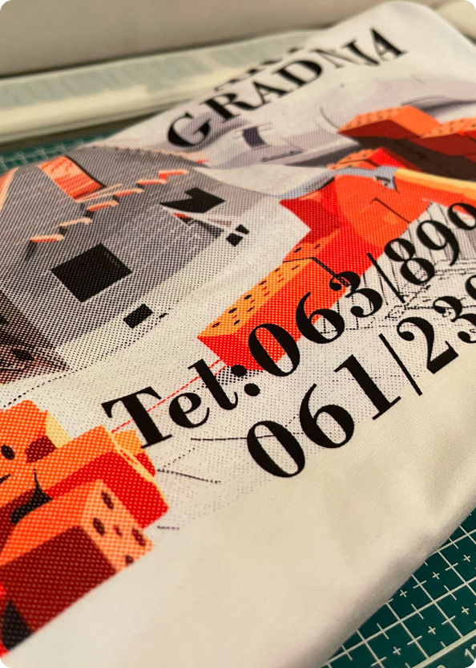
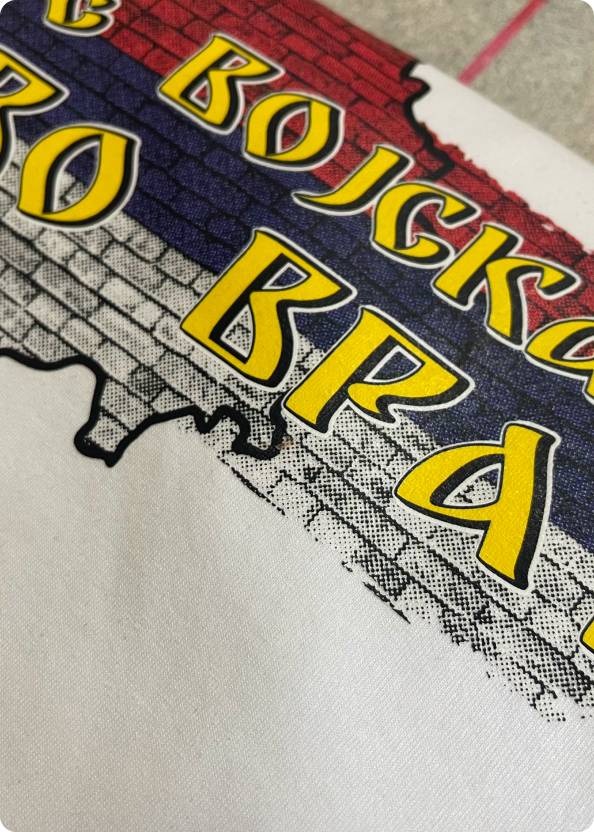
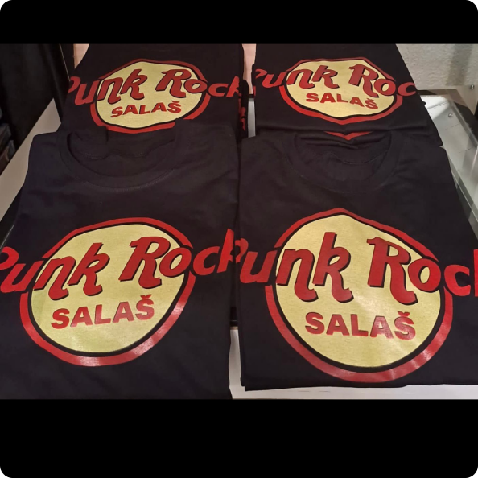
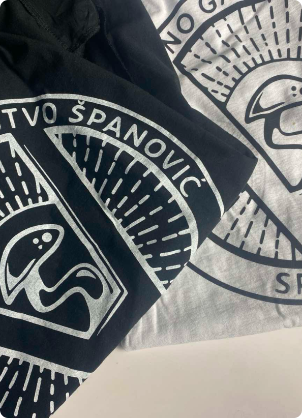
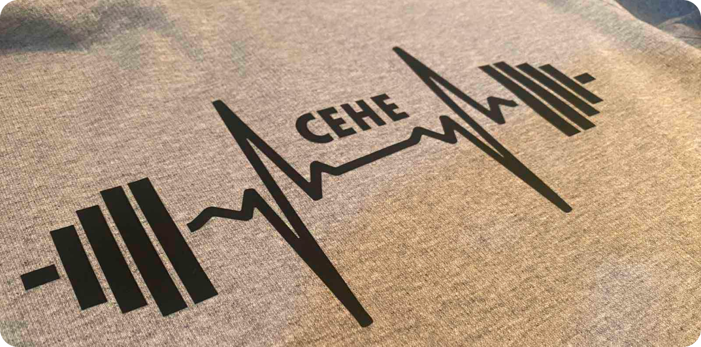

Naša sito štampa je idealna tehnika za štampu na različitim vrstama materijala, uključujući tekstil, majice, platnene torbe, i druge promotivne proizvode. Ova metoda omogućava dugotrajne, jasne i postojane otiske, što je čini savršenom za serijsku proizvodnju i personalizovane projekte.




Sito štampa je posebno popularna za izradu majica sa logom, promotivnih proizvoda i reklamnih materijala. Štampa se vrši direktno na materijal, garantujući visoku izdržljivost boja i otpornost na pranje. Naša oprema omogućava precizne otiske i korišćenje različitih boja, što omogućava kreiranje jedinstvenih dizajna.
- Izuzetno postojane boje – otporne na pranje i habanje
- Pogodna za velike i male serije proizvoda
- Štampa na raznim materijalima poput tekstila, papira, plastike, metala
- Idealna za promotivne proizvode, majice sa logom, i druge personalizovane artikle


Ako tražite kvalitetnu i dugotrajnu štampu na tekstilu, sito štampa je pravi izbor za vas. Kontaktirajte nas danas kako bismo zajedno realizovali vaše ideje i kreirali proizvode koji se izdvajaju!
KONTAKTIRAJTE NAS